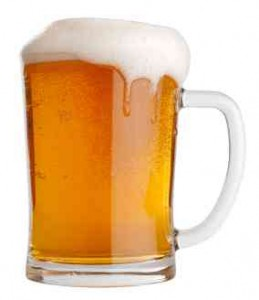

Projects
-

Introduction
January 1, 1880 Beer is Introduced to the Caribbean.Cheers to the British! Beer comes to the Caribbean thanks to the British and people are entranced by the taste..
July 1 1947 The Caribbean Development Company Limited (CDC) is formed by Sir Gerald Wight of McEnearney Alstons with seven (7) employees on its payroll.
January 1960 Breweries Opened in St. Kitts & Grenada.St. Kitts and Nevis and Grenada here we come! Hello to, new flavours and brands! Breweries are established in these islands to facilitate demand.
For more on the History. Click here
-
Founders
Co-Founders Mike Stevens and Dave Engbers open the doors to the 9800 square foot brewery in downtown Grand Rapids, MI. The first batches of beer are brewed. 1,396 total breweries in the country.